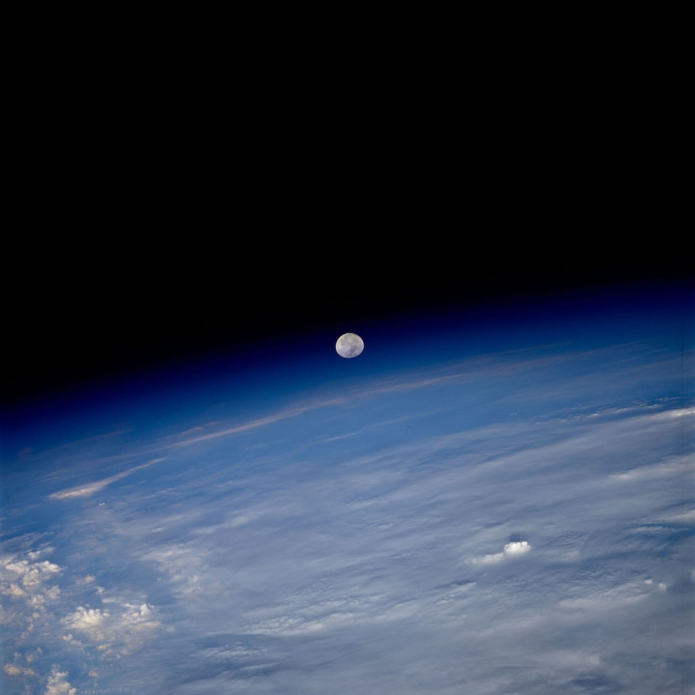
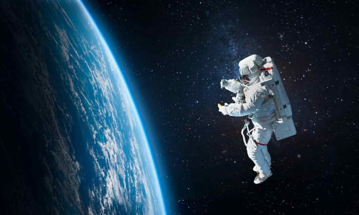

La exploración del espacio inició formalmente en el siglo XX, impulsada por los avances teóricos de principios de siglo, el desarrollo de cohetes militares durante la Segunda Guerra Mundial y la posterior rivalidad de la Guerra Fría entre Estados Unidos y la Unión Soviética.

No existe una cifra única exacta, ya que la exploración espacial incluye miles de lanzamientos (satélites artificiales, sondas automáticas, telescopios y misiones tripuladas) desde el inicio de la era espacial en 1957. Sin embargo, se pueden clasificar los datos principales de la historia:
